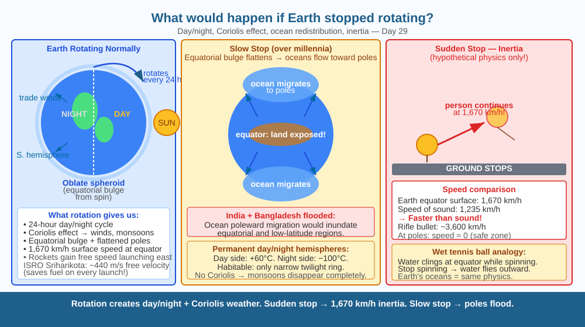

Discover how fundamentally the rotation of the Earth shapes everything about life on this planet — day and night, weather, ocean currents, and even the shape of the Earth itself — by imagining what would happen without it.
Earth has been spinning at about 1,670 km/h (at the equator) for 4.5 billion years. You cannot feel it because you are also spinning at the same speed. But this invisible spin shapes almost everything: the weather patterns, the winds, the shape of the globe, and the cycle of day and night. What would actually happen if it stopped?
What Earth's rotation does:
1. Creates day and night. The Earth rotates once every 24 hours. As it turns, different parts face the Sun (day) or face away (night). If rotation stopped, the same side would face the Sun permanently — a "day side" that bakes at over 60°C, and a "night side" that freezes below −100°C. The only habitable zone would be a narrow twilight ring between them.
2. Drives weather through the Coriolis effect. The spinning Earth deflects moving air and water — to the right in the Northern Hemisphere, to the left in the Southern Hemisphere. This creates the trade winds, the monsoon circulation, and the rotation of cyclones. Without rotation, the Coriolis effect disappears. Weather would be driven only by direct temperature differences (hot equator, cold poles) — a single giant convection cell in each hemisphere. India's monsoon — which depends on the Coriolis effect spinning the Bay of Bengal low-pressure systems into the subcontinent — would change completely.
3. Shapes the Earth itself. Earth is not a perfect sphere — it is an oblate spheroid (slightly flattened at poles, bulging at equator). The equatorial bulge exists because the spinning Earth "flings" mass outward. If rotation stopped, over thousands of years, the oceans would migrate toward the poles as the equatorial bulge flattened — most of India and Bangladesh would be submerged.
4. If it stopped suddenly (hypothetically): At the equator, everything not bolted to the ground would continue moving at 1,670 km/h — the speed of the Earth's surface — while the ground stopped. That is faster than a rifle bullet. Every building, person, and loose object would be flung sideways and destroyed.
Spin a wet tennis ball in your hand. Water clings to the equator. Stop spinning — the water redistributes toward the poles. The Earth's oceans are like that water. Now imagine spinning in a spinning chair and suddenly braking — you would fly forward due to inertia (your body kept moving while the chair stopped). Earth's sudden stop would do the same to everything on its surface.

The diagram has three panels. Left: Earth rotating normally — day/night line shown, trade wind belts (curving Coriolis arrows), oblate shape. Centre: Hypothetical stopped Earth — permanent day/night hemispheres, giant flood on former equatorial regions as ocean redistributes. Right: Sudden stop scenario — inertia arrow showing objects flung sideways at 1,670 km/h. A bottom comparison: Earth Coriolis cyclones (rotating) vs direct convection cells (non-rotating).
Fill a round basin with water. Stir it clockwise, then remove your hand. Watch the water continue to rotate. Now place a small boat or leaf in it. Notice that the boat doesn't fly outward — it moves in circles with the water. This shows inertia: the water (and the boat) keep moving even after the force is removed. If you could suddenly freeze the basin while the water kept moving, the water would slosh outward and over the edge. Scale this up to oceans.
The Moon is already tidally locked to Earth — it rotates once per orbit so the same face always points toward us. As a result, the "near side" of the Moon has relatively mild temperatures (−173°C to +127°C over a lunar month cycle), while the "far side" experiences even more extreme swings with no Earth-glow in the sky. If Earth eventually becomes tidally locked to the Moon (a process called "tidal locking"), it would rotate once every ~47 current Earth-days. How long would the "day" and "night" be? What would happen to the monsoon rains over South Asia?
What is the main effect Earth's rotation has on life and the environment?
Why is understanding the effects of Earth's rotation more useful than just knowing the Earth spins?
If Earth suddenly stopped rotating, what would you predict would happen to a person standing on the surface?
Earth's equatorial circumference is approximately 40,075 km. If the Earth stopped rotating suddenly and a person was standing at the equator, they would continue moving at Earth's former surface speed (calculated from circumference ÷ 24 hours). Calculate this speed in km/h. Then find: how does this compare to (a) the speed of sound (~1,235 km/h), and (b) the speed of an intercontinental ballistic missile (~7,000 km/h)? Would the person be thrown faster than sound?
Venus rotates backward (clockwise when viewed from above the north pole) at an extremely slow rate — a Venusian day is 243 Earth-days, longer than Venus's year (225 Earth-days). This means on Venus, the Sun rises in the west and sets in the east. Scientists think Venus may have been hit by a large object early in its history that reversed its spin, or that atmospheric tides (similar to Earth's tidal locking effect) gradually changed its rotation. Venus also has essentially no Coriolis effect — and its atmosphere spins 60× faster than its surface, creating 300 km/h winds at the cloud tops.
Earth's rotation creates day/night, Coriolis-driven weather (monsoons, cyclones), and the equatorial bulge. Sudden stop → inertia hurls everything sideways at 1,670 km/h. Slow stop over millennia → oceans flood former equatorial land.